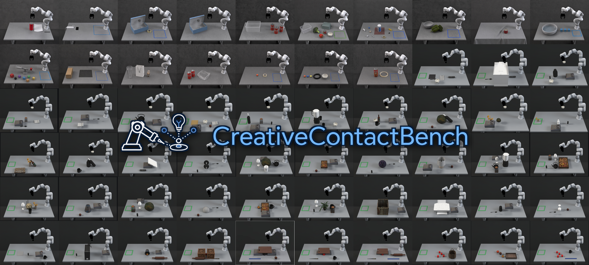
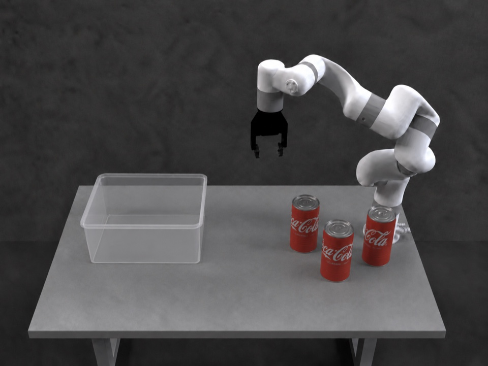
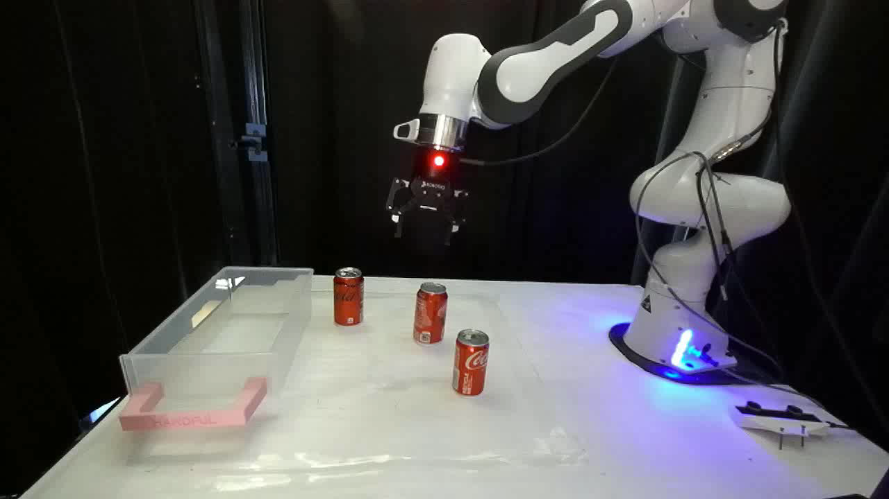

CreativeContactBench

The video could not be loaded. Open the MP4.
Task Example


Evaluation
On the 30-task RGB panel, humans and VLMs receive the same scene image, instruction, and candidate texts. Execution videos are not part of this input.
Rank the strategies
Provide an overall preference ordering of A–D. Strategies may share a rank.
Rate three dimensions
Score each strategy's effectiveness, feasibility, and creativity on a five-point scale.
Compare with humans
Compare model rankings with a reference formed from the ten participants' mean dense ranks.
The task collection also includes a separate 16-task study of contact descriptions and simulated tactile inputs. These inputs are distinct from the physical tactile sensing shown in the hardware demonstrations.
Leaderboard
Human–VLM agreement · 18 configurations · Updated 4 October 2026
| Configuration | Valid | Mean τb [95% CI] | nτ | Strict (%) | Inclusive (%) | Top ties |
|---|---|---|---|---|---|---|
| Complete coverage | ||||||
| GPT-5.6 Sol | 30/30 | 0.729 [0.585, 0.856] | 30 | 66.7 | 66.7 | 0 |
| GPT-6 Astra | 30/30 | 0.709 [0.555, 0.844] | 30 | 73.3 | 73.3 | 1 |
| GPT-5.5 | 30/30 | 0.667 [0.511, 0.800] | 30 | 66.7 | 66.7 | 0 |
| GPT-5.4 | 30/30 | 0.629 [0.503, 0.752] | 30 | 56.7 | 56.7 | 0 |
| Qwen3.8-27B† | 30/30 | 0.400 [0.189, 0.578] | 30 | 46.7 | 46.7 | 0 |
| Qwen3.6-35B-A3B† | 30/30 | 0.258 [0.082, 0.427] | 30 | 30.0 | 36.7 | 3 |
| Phi-4-Reasoning-Vision-15B | 30/30 | 0.229 [0.030, 0.418] | 30 | 26.7 | 33.3 | 4 |
| Phi-3.5-Vision | 30/30 | 0.222 [0.056, 0.389] | 30 | 50.0 | 50.0 | 0 |
| Qwen3.5-9B† | 30/30 | 0.185 [−0.011, 0.374] | 30 | 36.7 | 36.7 | 0 |
| Gemma-3-12B | 30/30 | 0.181 [−0.003, 0.362] | 30 | 26.7 | 26.7 | 0 |
| Gemma-4-E2B | 30/30 | 0.170 [−0.067, 0.409] | 27 | 36.7 | 50.0 | 9 |
| Gemma-3-27B | 30/30 | 0.149 [−0.031, 0.322] | 30 | 16.7 | 16.7 | 0 |
| Qwen3-VL-8B-Instruct† | 30/30 | 0.132 [−0.041, 0.308] | 30 | 23.3 | 23.3 | 0 |
| Qwen3-VL-4B-Instruct | 30/30 | 0.093 [−0.107, 0.293] | 30 | 23.3 | 30.0 | 2 |
| Gemma-3-4B | 30/30 | 0.062 [−0.130, 0.248] | 30 | 23.3 | 23.3 | 1 |
| Partial coverage | ||||||
| Gemma-4-12B | 27/30 | 0.401 [0.236, 0.563] | 27 | 44.4 | 59.3 | 4 |
| Gemma-4-E4B | 26/30 | 0.237 [0.025, 0.439] | 26 | 46.2 | 46.2 | 0 |
| Phi-4-Multimodal | 29/30 | 0.178 [−0.062, 0.408] | 19 | 13.8 | 72.4 | 20 |
Valid: complete responses / 30 tasks. nτ: tasks with defined Kendall's τb. Strict and Inclusive report Top-1 agreement. Top ties: model responses with a tied top rank. Partial-coverage configurations are reported separately because their valid task sets differ.
Real-World Reproductions
72 recorded demonstrations across 19 tasks show how candidate strategies translate into physical contacts and motions. Tasks were selected based on available laboratory objects, the experimental setup, and safety considerations.
The preview could not be loaded. Browse the task videos.